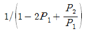
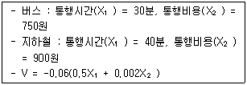
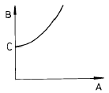
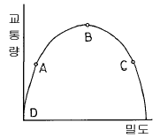
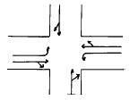
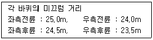

1과목: 교통계획
1. 모집단의 개체가 똑같은 확률로 뽑혀지도록 모집단에서 추출하는 방법은?
2. 하나의 Trip에는 몇개의 Trip end가 있는가?
3. 통행실태 또는 교통시설 조사를 위한 존의 설정방법으로 적합하지 않은 것은?
4. 한 통근자가 집에서 택시로 지하철역까지 간후 지하철로 갈아타고 직장에 도착했다. 이 경우 목적통행수(Linked Trip)는 얼마인가?
5. 이상적인 조건에서 양방향 2차로 도로의 용량은?
6. D1 = 20 - 3P1 + 4P2의 교통수요모형에서 D1은 택시교통수요 P1은 택시통행비용, P2는 지하철통행비용이다. 이 경우 지하철통행비용에 대한 택시교통수요의 교차탄력성은?

7. 통행 발생 모형중의 하나로서 통행발생량과 같은 종속변수를 소득이나 자동차 보유대수등의 설명 변수들에 의해 교차분류시켜 도출해 내는 단순하고 이해하기 쉬운 모형은?
8. 개별행태 모형은 교통사업의 영향을 행태적인 측면에서 접근하여 파라메타를 추정하는 방법이다. 다음 중 개별행태 모형의 분석방법이 아닌 것은?
9. 다음 중 교통체계관리기법(TSM)의 범주에 들지 않는 것은?
10. 공동배차제(버스회사)의 유형으로 적합치 않는 것은?
11. 시간가치(value of Time)는 교통시설 투자의 타당성 분석에서 매우 중요하다. 다음 중 시간가치를 산출하는 접근방법에서 근로와 여가활동중에서 선택의 문제로 접근하는 방법은?
12. 보행자 도로의 주요 효과척도로 거리가 먼 것은?
13. 다음 중 교통 수단선택에 영향을 미치는 요인으로서 적합성이 낮은 자료는?
14. 교통수요예측기법 중 집계형모형의 변수로 사용 되는 것은?
15. 도시 전체면적은 600㎞2이며, 가구수가 400만이고 승용차수가 100만대이며, 인구가 1,100만인 도시의 도시통행계수(UTF : Urban Travel Factor)값은?
16. 구체적인 목적을 가진 공간상의 일방향 움직임으로 승객이나 화물이 목적지에서 활동을 위해 출발지에서 출발하여 목적지에 도달하는 행위의 한 단위를 의미하는 것은?
17. 조사대상지역 밖에 출발지 혹은 목적지를 가진 통행을 조사하는 것으로, 주요 지점에서 조사대상지역으로 유입-유출하는 차량을 조사하는 방법을 무엇이라 하는가?
18. 로짓모형을 이용한 교통수단선택모형의 추정결과 다음과 같은 효용함수가 산정되었을 때 대중교통 수단분담율은?

19. 동시환승시스템 (Timed-Transfer System)에 대한 설명 중 맞지 않는 것은?
20. 방사형 대중교통 노선망(Radial Transit Line)의 노선 형태로 인한 특징적인 단점은?
2과목: 교통공학
21. 교통량이 180(대/시)라고 한다. 한 시간내에 도착하는 자동차 대수가 poisson 분포를 따른다고 가정할때, 1분간에 4대의 자동차가 도착할 확률은 얼마인가?
22. 어느 도로구간에서 30분 동안 교통량을 측정한 결과 1,000대가 관측되었다. 이때 평균 차두시간은?
23. 편도 4차로도로에서 편도 교통량이 7800pcph이고 평균속도가 40km/h이었다. 이때의 밀도와 차간시간 (Time Gap)을 계산하면? (평균차량의 길이는 4m이다.)
24. 차량속도가 40㎞/hr 인 교차로에서 차량탐지기가 40m 전방에 설치된 반감응식(semi-actuated)교통신호등의 단위 연장 시간(unit extension)으로 적절한 값은? (단, 차량이 정지선에 도착하였을 때 황색신호가 시작되도록 설계한다.)
25. 도로상의 일정구간을 주행하는 교통류를 3가지 종류의 차량으로 구분할 수 있다. 즉 30km/시로 주행하는 차량들, 40km/시로 주행하는 차량들, 50km/시로 주행하는 차량들로 구분된다. 각각의 속도로 주행하는 차량들의 교통량이 각각 100대/시, 200대/시, 50대/시일 때 전체 교통류의 시간 평균속도는?
26. 연속교통류의 밀도, 속도, 교통량, 통행시간 관계의 다음 그림에서 표기가 옳은 것은?

27. 다음 중 일반적으로 설계시간 교통량으로 사용되는 것은 무엇인가?
28. 지역의 구분에 따른 설계시간 계수(K)를 바르게 제시한 것은?
29. PIEV 시간은 교통시설 설계에서 대단히 중요한 요소이다. 도로설계에 사용되는 기준으로서 PIEV 시간은 얼마인가?
30. 다음 교통조사 중 장기간 동안 기계식으로 교통량을 수집하는 조사는?
31. 정지한 상태에서 30 km/h로 가속하는데 승용차는 2.3초가 걸리고, 레미콘 트럭은 7.1초가 걸렸다. 이때 레미콘 트럭이 가속기간동안 주행한 거리는 승용차의 가속기간동안 주행한 거리의 약 몇배인가?
32. 교통제어설비의 요구조건에 맞지 않은 것은?
33. 유효녹색시간을 올바르게 나타내고 있는 식은 어느 것인가?
34. 교통량과 밀도의 관계를 나타내는 다음 그림에서 서비스 수준 E의 상태를 나타내는 점은?

35. 어떤 지역간 도로의 목표년도 AADT가 60,000대로 추정되었다. 이 교통량을 어떤 계획서비스 수준(v/c=0.70)으로 처리하기 위해서는 몇 차로 도로가 되어야 하는가? (단, 설계시간계수(K)=0.15, 중방향 계수(D)=0.6, 차로용량=2,200 pcphpl, PHF = 0.95, 중차량 보정계수(fhv)=0.95, 차로폭 및 측방여유폭 보정계수(fw)= 1.0)
36. 자유속도 60 km/시, 정체(jam)밀도 400 대/km를 갖는 교통류를 그린쉴드 모형을 적용하여 분석할 때 용량은?
37. 교차로의 각 방향별 교통통제를 아래 그림과 같이 하고자 한다. 신호현시(phase)의 수는 얼마로 하여야 하는가? (단, 비보호 좌회전은 없는 것으로 한다.)

38. Moving Vehicle Method에서 각각의 도로구간당 요구되어지는 data가 아닌 것은?
39. 교통류 모형중 수학적으로는 가장 단순하고 사용하기 편리하지만, 현실적인 혼잡밀도의 값을 나타내기가 어려운 모형은?
40. 3현시로 운영되는 신호교차로에서 각 현시별로 고려해야할 현시율(vi/si)은 각각 0.3, 0.15, 0.25이다. 보행자가 없는 경우 Webster 방식에 의한 최적신호주기를 구하면? (단, 현시당 손실시간은 3초이다.)
3과목: 교통시설
41. 어떤 도시 호텔들의 주차특성을 조사한 결과 주차 발생량이 첨두시간 동안 건물 연면적 1000m2당 10대로 나타났으며 주차 이용효율은 0.6이었다. 신축예정인 어느 호텔의 상면적이 20000m2일 때 목표년도(3년후)의 주차수요를 원단위법으로 구하면 얼마인가? (단, 이 도시의 주차대수 연평균 증가율은 5%이다.)
42. 도로의 구분에서 도시지역과 지방지역을 구체적으로 구분하고자 할 때 가장 많이 이용되는 지표는 인구의 규모를 이용하는데 도시지역은 인구 얼마 이상이 거주하는 지역을 대상으로 하는가?
43. 좌회전 전용차로의 효과로 가장 거리가 먼 것은?
44. 곡선도로에 있어서 곡선의 반경이 R이고 완화곡선의 길이가 L일 때, 완화곡선식 중 클로소이드의 일반식은? (단, A : 클로소이드 파라미터)
45. 설계속도가 120km/h인 고속도로에서 일반적인 버스 정차로의 길이는?
46. 설계속도를 설명한 것으로 틀린 것은?
47. 다음 용어에 대한 설명으로 옳은 것은?
48. 교차로간 간격을 결정하는데 있어 고려해야 할 사항이 아닌 것은?
49. 설계속도가 100km/h인 지방지역 고속도로의 차도우측에 설치하는 길어깨(갓길)의 최소폭은?
50. 도로의 기능에 따른 구분 중 이동성이 가장 낮은 도로는?
51. 다음 도로의 기능 중 가구를 확정하고 택지와의 접근을 목적으로 하는 도로는?
52. 통과도로의 폭이 30m이고 차량의 길이가 5m, 접근속도는 60㎞/hr, 임계감속도는 4.5m/sec2 이라고 할 때 황색신호는 몇초인가? (단, 지각 반응시간은 1초를 적용한다.)
53. 신호가 없는 교차로에서 좌회전 차로의 길이를 구할 때 기준이 되는 것은?
54. 고속도로 비상 주차대의 설치 간격으로 옳은 것은?
55. 지방지역에서 인터체인지의 배치기준으로 옳은 것은?
56. 노선계획의 수립시 고려해야 할 통제지점(control point)에 해당되지 않은 것은?
57. 앞지르기시거를 계산하기 위한 가정으로 틀린 것은?
58. 운전자가 교통안내표지를 읽고 자기의 목적에 합당하게 적용하려면 보통 8초가 소요된다고 한다. 설계속도가 80km/시인 도로에서 진입로 전방 몇 m에 표지를 설치해야 하는가?
59. 시멘트콘크리트 포장도로의 횡단경사의 기준은?
60. 클로버형 인터체인지의 특징으로 볼 수 없는 것은?
4과목: 도시계획개론
61. 도시의 구성요소와 거리가 먼 것은?
62. 건폐율 70%로 규제되어 있는 지역에서 연상(延床)면적 2,000m2의 건물을 4층으로 짓고자 한다. 필요한 대지의 최소면적은 얼마인가?
63. 개발 제한구역의 설정목적을 옳게 말한 것은?
64. 통과교통량이 가장 적은 국지도로의 형태는?
65. 1920년대부터 1940년대에 걸쳐 미국의 버제스, 호이트, 해리스 등에 의하여 주창된 도시의 공간 내부구조이론이 아닌 것은?
66. 도로는 폭원에 의하여 광로, 대로, 중로, 소로로 분류된다. 다음 중 대로의 폭은?
67. j지역의 i산업의 입지상(立地商 L.Q)에 관한 이론 설명 중 틀린 것은?
68. 도시재개발에 있어서 도시기능과 생활환경이 점차 악화되고 있는 대상지에서 건축물의 신축을 부분적으로 허용하며, 나머지 건축물을 수리, 개조함으로서 점진적으로 개조하는 재개발수법은?
69. 고대 중국 장안성의 가로망의 기본형은?
70. 현행 국토의계획및이용에관한법률에서 정하고 있는 용도 지역에 해당되지 않는 것은?
71. 도시(지역)경제학의 주요이론으로 거리가 먼 것은?
72. 도로유형별 경관구성기법으로 가장 거리가 먼 것은?
73. 지구단위계획의 목적이 아닌 것은?
74. 다음 도시유형들 중 모도시와의 종속적관계로 형성되어지는 도시형태는?
75. 대중교통중심도시를 만들기 위해 지하철건설을 계획하고 지하철역 주변에 건설되는 건물에 대해 주차상한제를 폐지하였다. 이는 계획 목표를 달성하는 조건 중 어떤 조건에 위배되는가?
76. 토지이용계획과 지역지구제와의 개념에 대한 설명으로 가장 적절한 것은?
77. 과거 10년간 등비급수적으로 인구증가를 한 도시가 있다. 현재 인구는 90만, 10년전 인구는 60만이다. 년평균 증가율은?
78. 격자형 도로망의 단점이 아닌 것은?
79. 부캐넌 리포트(Buchanan Report)의 제안은 주구내 가로망 체계의 구성을 위한 기본개념으로서 매우 유용하다. 다음 중 부캐넌 가로망체계의 구성에 해당되지 않는 것은?
80. 주거지역내에서 주거환경을 보호하기 위한 가로망 계획시 고려사항과 거리가 먼 것은?
5과목: 교통관계법규
81. 도로의 구조·시설기준에 관한 규칙에 의한 일반도로의 구분 중 등급이 가장 낮은 도로는?
82. 도로교통법상 노면표지중 중앙선 표시는 노폭이 최소 몇 m 이상인 도로에 설치하는가?
83. 다음 중 접도구역의 지정 목적이라고 할 수 없는 것은?
84. 교통유발부담금의 부과대상 시설물은 각층 바닥면적의 합계가 최소 얼마 이상이어야 하는가?
85. 주차전용건축물의 제한 규정으로 틀린 것은?
86. 다음중 자동차가 앞지르기를 할 수 없는 장소로 틀린 것은?
87. 정부의 시책에 준하여 그 관할구역내의 교통안전에 관한 시책을 실시하는 곳은?
88. 보도와 차도의 구분이 없는 도로에 차로를 설치할 때에 그 도로의 양 측면에 설치하여야 하는 것은?
89. 도로를 굴착하여 공작물을 신설하고자 하는 자는 그 점용에 관한 사업계획서를 매년 정해진 달에 제출하여야 하는데 이중 정해진 달이 아닌 것은?
90. 부설주차장의 설치기준 중 문화 및 집회시설인 예식장은 시설면적 몇 m2당 1대를 기준으로 부설주차장을 설치하는가?
91. 주간선도로에 대하여는 어떤 차를 기준으로 안전하고 원활하게 통행할 수 있도록 도로 설계를 해야 하는가?
92. 국토의계획및이용에관한법률의 시설보호지구에 속하지 않는 항목은 어느 것인가?
93. 다음 중 도시교통정비촉진법상의 용어 정의가 틀린 것은?
94. 다음중 도로법상의 내용 설명 중 맞지 않는 것은?
95. 노상주차장의 설치권자는 다음 중 누구인가?
96. 다음 교통영향평가대상중 중앙교통영향심의위원회의 심의대상이 아닌 것은?
97. 교통안전법 규정에서 다음에 열거한 내용중 건설교통부장관이 시· 도지사에게 위임한 권한이 아닌 것은?
98. 차도의 평면곡선부에는 조건에 따라 편경사를 두도록 규정하고 있다. 이 규정에도 불구하고 편경사를 두지 아니할 수 있는 경우는?
99. 원활한 교통소통을 위하여 설치하는 전용차로의 설치권자는?
100. 경찰서장이 교통에 방해될 물건을 도로에 방치하여 제거한 공작물을 보관한 때에는 그 공작물등을 보관한 날로부터 며칠간 그 경찰서의 게시판에 공고하는가?
6과목: 교통안전
101. 교통사고 조사의 일반원칙 사항으로 맞지 않는 것은?
102. 한 차량이 직선 미끄럼을 하여 각 바퀴의 미끄럼흔적의 길이가 다음과 같을 때 이 차량의 미끄럼 거리는?

103. 노면 마찰계수 0.5, 편경사 0.1, 곡선반경 500m인 곡선부도로에서 차량의 임계속도는?
104. 평상시 교통규제에는 사고방지를 위한 것, 원할한 교통을 위한 것, 도로환경 보전을 위한 것이 있는데 다음 중 사고방지를 위한 것이 주 목적인 것은?
1⑤. 교차로에서의 충돌도(collision diagram)를 작성할 때의 기재사항으로 가장 올바른 것은?
106. 다음 중 안전개선계획의 계획단계에서 이루어지는 작업이 아닌 것은?
107. 교통안전을 고려한 평면교차로 설계원칙으로 틀린 것은?
108. 다음 중 시거불량에 의한 교통사고 예방대책에 해당되지 않는 것은?
109. 지도상에 핀, 색종이를 붙이거나 표시를 하여 사고가 집중적으로 발생하는 지점의 신속한 시각적 색인을 제공하는 기법은?
110. 운전면허 소지자 50,000명의 지난 5년간 사고경력을 조사하였다. 전체교통사고는 10,000건이다. 지난 5년간 3회 이상 교통사고를 일으킨 사람을 교통사고 상습자로 관리하고자 한다. 교통사고 상습자는 몇 명으로 추정되는가?
111. 방호책이 가져야 할 조건과 거리가 먼 것은?
112. 현행 우리나라 교통사고의 사망 통계기준일은?
113. 일반적인 교통사고의 특성 설명 중 옳지 않은 것은?
114. 교통사고의 정의를 올바르게 기술한 것은?
115. 교통사고 방지를 위해 제한속도를 조정코자 할 때 조사된 표본의 누적분포상에서 몇 % 에 해당되는 속도를 제한 속도로 정하는 것이 합리적인가?
116. 사고경험에 기초한 위험지점 선정 기법 중 백만차량-km당 사고건수 자료를 요하지 않는 기법은?
117. 한 차량이 평지에서 단속적으로 15m에 이어 20m의 바퀴자국을 남기고 정지하였을 경우 이 차량의 초기속도는? (단, 마찰계수는 0.8로 계산할 것)
118. 도로구간의 사고집중을 나타내기 위해서 사용되는 이동연장(slider length)의 길이로 적절한 값은?
119. 교통사고 조사시에는 도로상에 나타난 스키드마크(Skidmark)로부터 차량의 제동시 속도를 산출할 수 있다. 다음 중 차량의 제동시 속도 산출에 영향을 미치는 요인이 아닌 것은?
120. 어느 차량이 급제동하여 20m를 미끄러져 앞에 있는 차량과 충돌하였다. 앞차량과 충돌시의 충돌속도는 50km/시로 추정된다면, 도로는 평지이고 타이어와 노면의 마찰계수는 0.8일 때 이 차량이 미끄러지기 시작할 때의 초기 속도는 약 얼마인가?